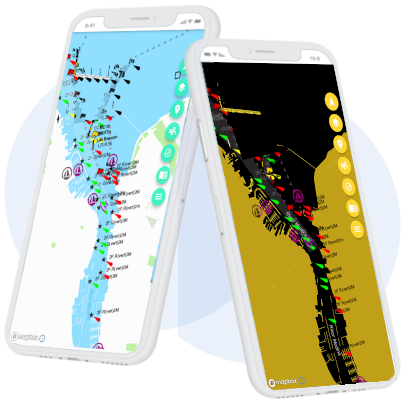

NauticApp
Google Play, 2020–2026 · no longer maintainedNauticApp was an Android app for sailors, built in Flutter. It brought together the things you check on a small boat: where you are, how you're moving, the weather, the logbook and the engine. It was published on Google Play from 2020 until it was withdrawn in 2026.
This page is kept as a record of the project.
What the app did
- Chartplotter. A Mapbox map showing the boat's live position.
- Readings and compass. GPS position, speed over ground (SOG), course over ground (COG) and heading, from the phone's own sensors.
- Marine weather. Forecasts with wind speed, direction and conditions, from OpenWeatherMap.
- Logbook. Trips recorded with position, speed and notes, stored on the device.
- Engineering hub. Engine troubleshooting guides, maintenance schedules and a spare-parts inventory.
- Safety checks. Checklists to go through before leaving.
NautiGuard: open-source boat sensors
NautiGuard was the hardware side: small ESP32 devices on the boat's Wi-Fi that the app reads over HTTP.
- BilgeMonitor measures the bilge water level with an ultrasonic sensor, switches the bilge pump on automatically and shows the readings in NauticApp. Written in C++ with PlatformIO; the source is on GitHub.
Built with
- Flutter / Dart
- Riverpod
- Mapbox GL
- SQLite (sqflite)
- GPS, compass & motion sensors
- OpenWeatherMap API
- fl_chart
- ESP32 · C++ · PlatformIO